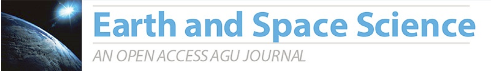

In the near future, scientists will routinely use new tools to develop research papers that will document all the associated digital objects (data, software, workflows, etc.). This will make science more open, promote fair credit of scientific contributions, and facilitate reproducibility.
The Geoscience Papers of the Future (GPF) Initiative is a project to get geoscientists to publish papers together with the associated digital products of their research. This means that a paper would include: 1) Documentation of datasets, including descriptions, unique identifiers, and availability in public repositories; 2) Documentation of software, including pre-processing of data and visualization steps, described with metadata and with unique identifiers and pointers to public code repositories; 3) Documentation of the provenance and workflow for each figure or result.
The Geoscience Papers of the Future Initiative has two major components:
